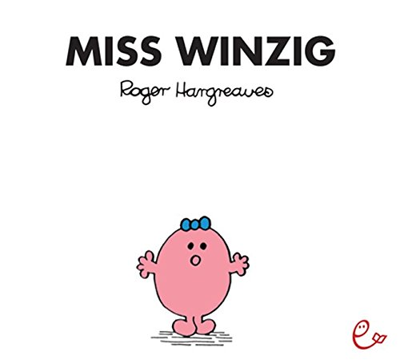

Miss Winzig war ungewönlich klein. Sie war das Gegenteil von groß. So Winzig klein war sie, dass sie nicht einmal in einem Haus wohnte. Wisst ihr, wo sie wohnte? In einem Mauseloch im Esszimmer von Bauer Heimer.
Sie hatte sich ihr Mauseloch sehr gemütlich eingerichtet, und Mäuse gab es glücklicherweise auch keine mehr, weil die Hofkatze alle verjackt hatte.
Aber weil sie so winzig klein war, hatte noch niemand bemerkt, dass sie jetzt in dem Mauseloch wohte. Kein Mensch wusste von ihr. Weder der Bauer und seine Frau. Und so lebte sie ganz alleine. Es gab niemanden, mit dem sie hätte reden können.
Sie war sehr einsam. Und traurig. Oh je!